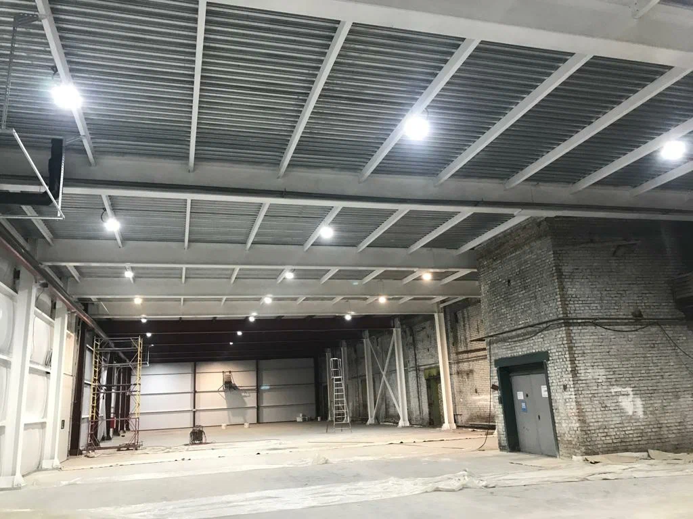

Особенности складского здания
При подготовке работ рассматриваем колонны, балки, фермы и связи, указанные в проекте. Стеллажи, коммуникации и действующая логистика могут ограничивать доступ. Эти условия важно обозначить до согласования графика.
Зонирование площадки
Обсуждаем освобождение участков, укрытие товара и оборудования, маршруты перемещения персонала и место для материалов. Возможность работы без остановки отдельных операций оценивается по конкретному объекту, а не обещается заранее.
Высота и геометрия
Большая площадь пола не даёт точной площади металлического каркаса. Для расчёта нужны чертежи или ведомость конструкций. Отдельно учитываются доступ к высотным фермам, сложные соединения и размещение средств подмащивания.
Исходные данные
Пришлите план склада, высоту, фотографии каркаса, режим эксплуатации и требования проекта. По ним можно обсудить технологию, последовательность зон и исходные данные для сметы.